Ik teken uw huis en denk mee tot het klopt.
Ik ben Nathalie Schils. Vanuit mijn bureau aan de Grensstraat ontwerp ik woningen en verbouwingen, en ik help u kiezen: welke steen, welk hout, bij welke leverancier. U hebt één aanspreekpunt, van de eerste schets tot de sleutel.
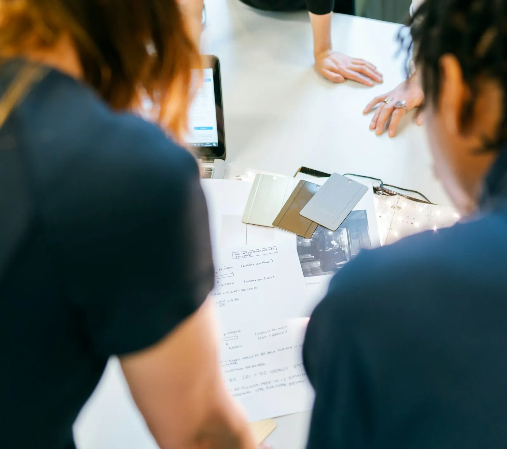
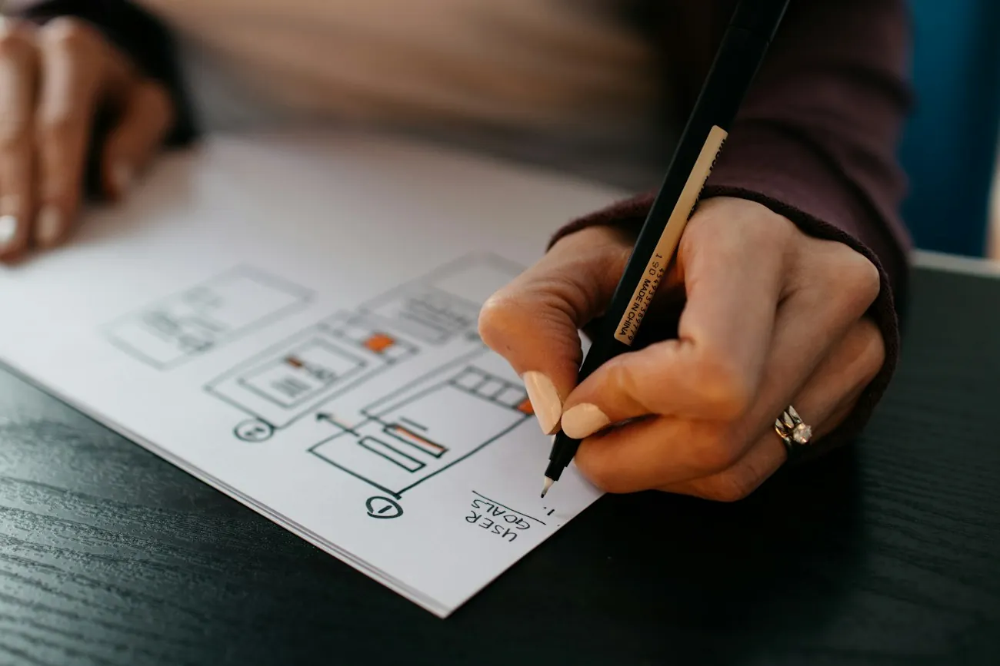
Ik denk graag mee, ook over de stenen en waar u ze gaat bekijken.
NathalieZo groeit een plan
Elk huis begint met een lijn op papier. Daarna komen het gevelplan, de maquette, de werf en op een dag de sleutel. Ik zit er van begin tot einde bij.
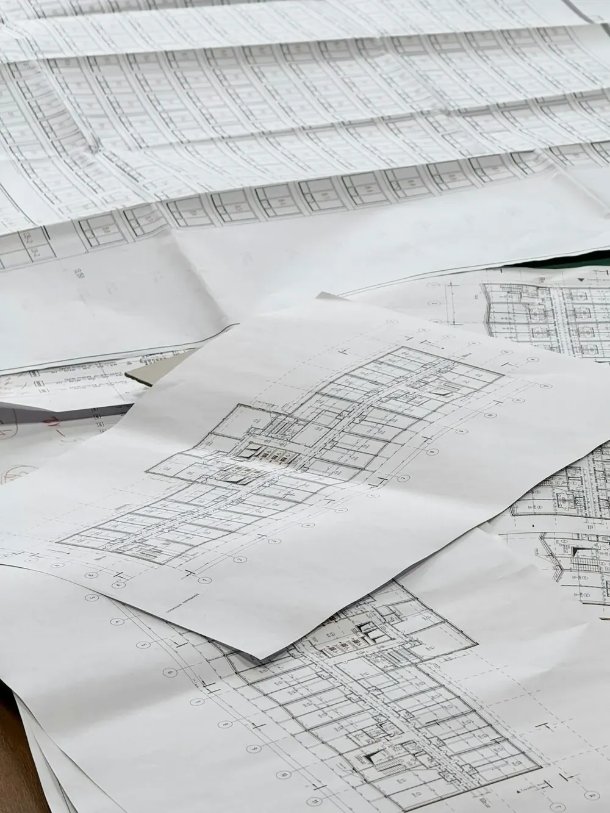
1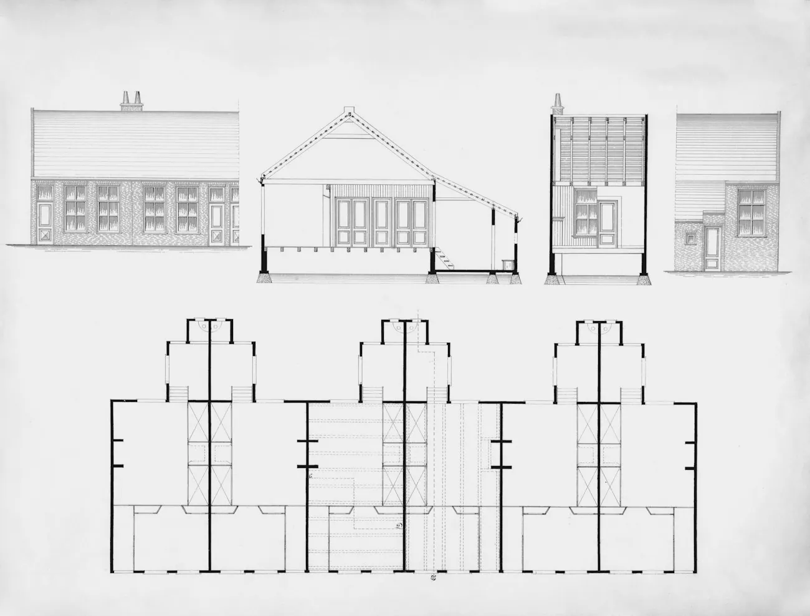
2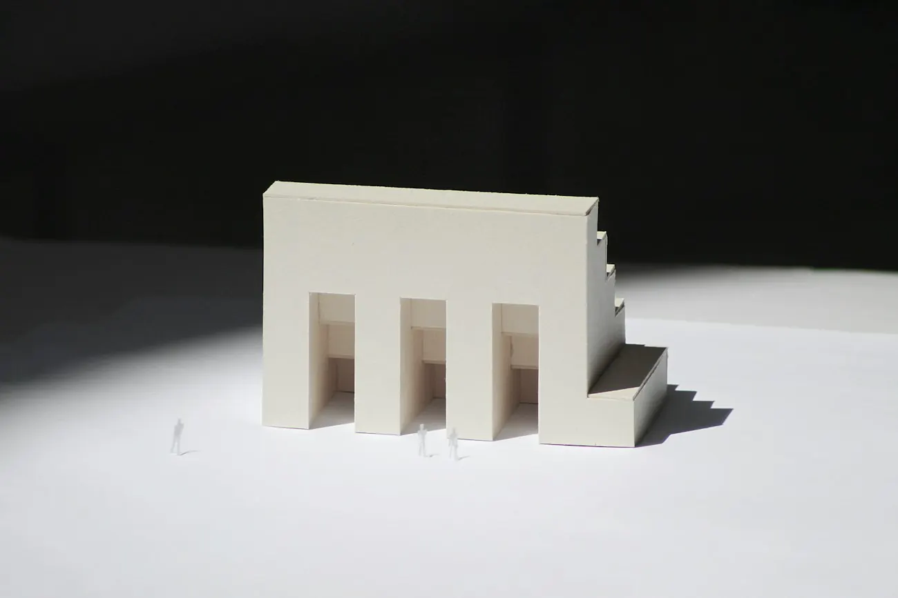
3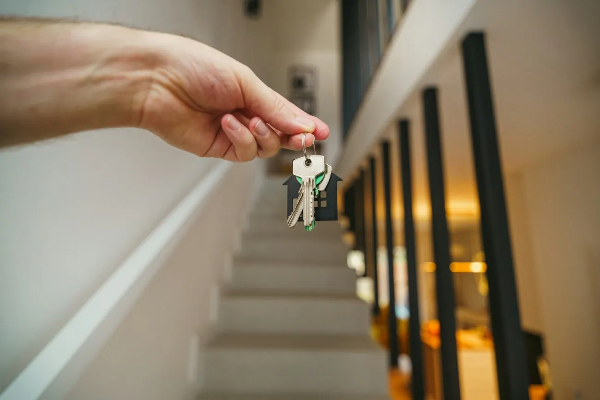
5Eén architect, van schets tot sleutel
Wie bij mij aanklopt, krijgt geen dossiernummer. U belt mij, u zit met mij aan tafel en op de werf ziet u mij ook. Zo weet ik bij elke beslissing waarom we ze samen namen.
Wat klanten het vaakst over mij schrijven: dat ik meedenk. Over de indeling en het licht, maar ook over welke steen of welk hout, en bij welke leverancier u die gaat bekijken. En dat ik bereikbaar blijf, ook als het plan al lang getekend is.
Architectenbureau Nathalie Schils
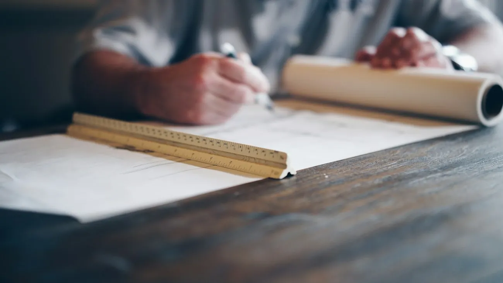
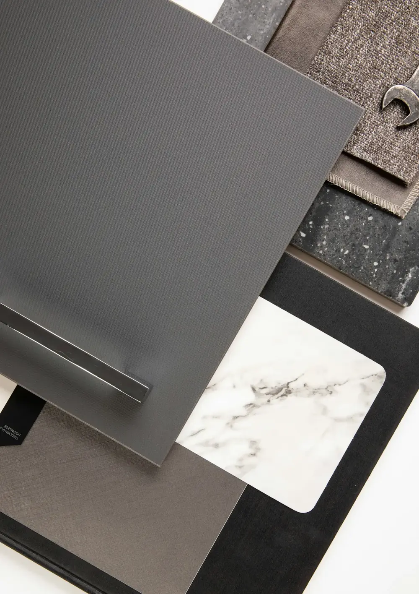
Vier stappen, één vast gezicht
Bouwen of verbouwen duurt even. Hier ziet u wat er wanneer gebeurt, en wat u zelf al kan klaarleggen.
Kennismaken
We zitten samen aan tafel of op uw perceel. U vertelt hoe u wil wonen, ik zeg eerlijk wat er kan op die plek.
Schets en ontwerp
Eerst losse schetsen, dan een ontwerp in plan en gevel. We sturen bij tot het voor u klopt, ook als dat een paar rondes vraagt.
Omgevingsvergunning
Ik maak het dossier op en dien het in via het Omgevingsloket. Komt er een vraag van de stad, dan beantwoord ik die.
Werf en oplevering
Op de werf kijk ik of alles gebouwd wordt zoals getekend. Bij de oplevering lopen we samen het huis door.
Samen kiezen, steen voor steen
Een huis staat of valt met zijn materialen. Klik door de stalen en zet op uw bord wat u aanspreekt. Bij het eerste gesprek nemen we het samen door.
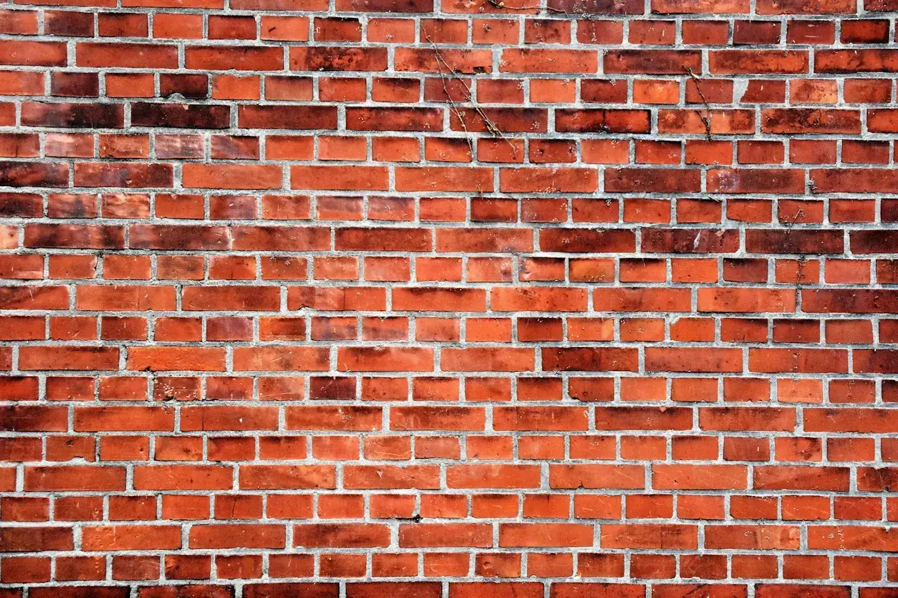
Gevelsteen
- Waar het past
- Om op te letten
Gemiddeld uit 11 reviews van mensen die met Nathalie bouwden of verbouwden.
Lees alle reviews op GoogleZe realiseert prachtige ontwerpen en denkt mee en zoekt naar een oplossing tot je het gewenste resultaat behaald. Wij hebben verschillende keren met haar samen gewerkt en zijn telkens zeer tevreden van haar werk.Review op Google
Wat mensen vaak vragen
Staat uw vraag er niet bij? Bel gerust, dan zoeken we het samen uit.
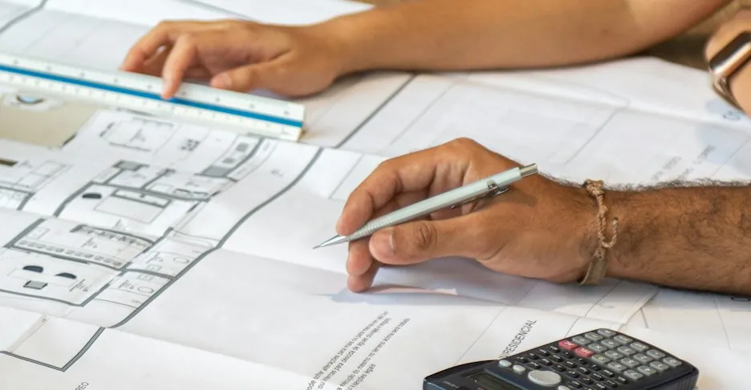
U vertelt wat u wil: bouwen, verbouwen of uitbreiden, en hoe u er wil wonen. Ik kijk naar wat er op het perceel kan en zeg eerlijk waar de knelpunten zitten. Neem gerust foto's, oude plannen en het kadasterplan mee als u die hebt.
Dat is vaak de beste plek om te beginnen. Op de grond zelf zien we meteen waar de zon staat, hoe de buren gebouwd hebben en waar de oprit kan komen.
Graag zelfs. Ik geef u advies over stenen, hout, dakbedekking en afwerking, en zeg bij welke leveranciers u ze kan gaan bekijken. Zet op het materialenbord hierboven alvast wat u aanspreekt.
Ik maak het dossier op en dien het in via het Omgevingsloket. Hoe lang de stad erover doet, hangt af van de procedure. Dat zeg ik u bij het indienen, zodat u weet wanneer u de aannemer kan inplannen.
Dat hangt af van wat u bouwt of verbouwt en wat u van mij verwacht. Na het eerste gesprek krijgt u een voorstel op papier, zodat u weet waar u aan toe bent voor we beginnen.
Het bureau ligt in Kabergheide, waar Bilzen en Diepenbeek elkaar raken. Diepenbeek, Genk en Hasselt liggen op een korte rit. Bel even, dan bekijken we of uw project in de buurt ligt.
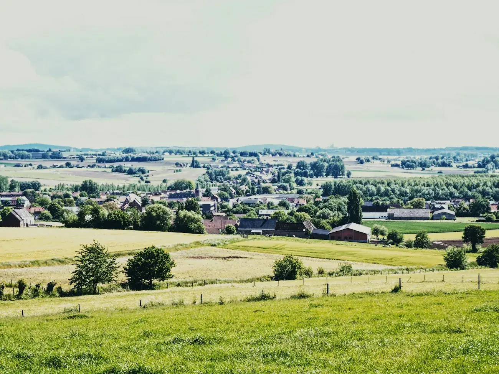
Aan de Grensstraat in Kabergheide
Het bureau ligt aan de rand van Bilzen, op de grens met Diepenbeek. Bel of stuur een bericht, dan spreken we een moment af.
- Grensstraat 4, 3740 Bilzen
- Bilzen-centrum, Diepenbeek, Genk en Hasselt op een korte rit
- 011 23 24 18 of 0496 18 68 18
Vertel me over uw plan
Een stuk grond, een huis dat anders moet of gewoon een idee. Laat iets weten, dan bel ik u terug om een eerste gesprek te plannen.